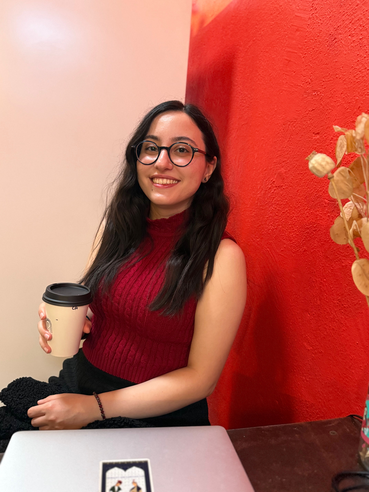

Do frontier LLMs represent how national cultures change?
Evaluated Claude, GPT, Gemini and Qwen against two decades of World Values Survey data across 40 countries.
Quantitative behavioral scientist working on AI evaluation, trust in AI, and multilingual & cultural safety. My focus is measurement: operationalizing constructs like trust, bias, harm and cultural alignment so evaluations capture what they claim to.

How LLMs reshape cultures, and how well they reproduce people outside the Western, English-speaking world.
When trust in AI is warranted, and how relying on AI changes decision-making and behavior.
How safety systems fail users and cause harm, especially in languages other than English.
Sociotechnical and ethical consequences, including how AI interaction shapes people's sense of self.
Evaluated Claude, GPT, Gemini and Qwen against two decades of World Values Survey data across 40 countries.
Examining how AI systems may standardize cultural representations and what this means for policy and cultural diversity.
10M+ tweets and three preregistered experiments show a low-cost correction raises intergroup trust.